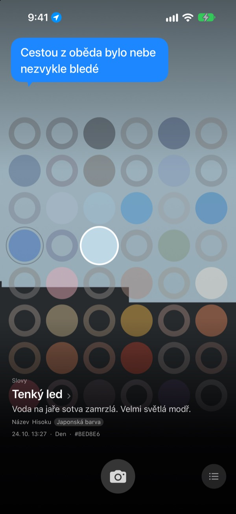
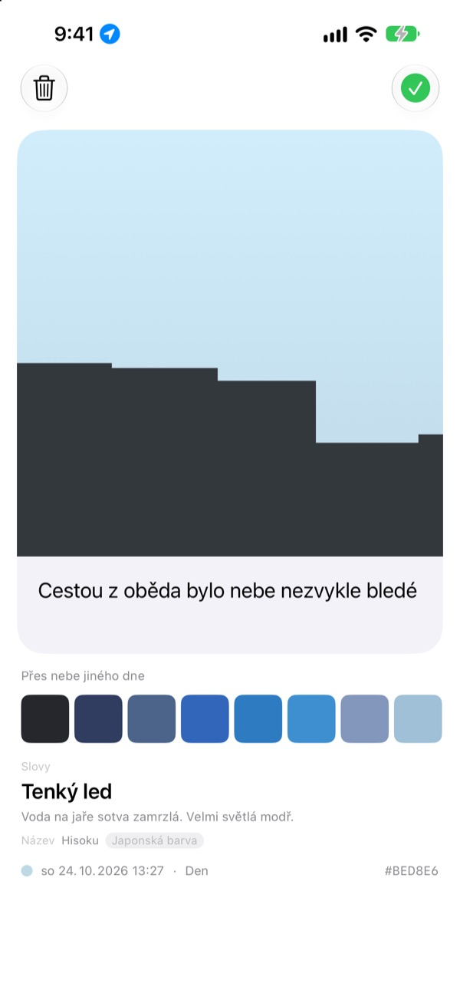
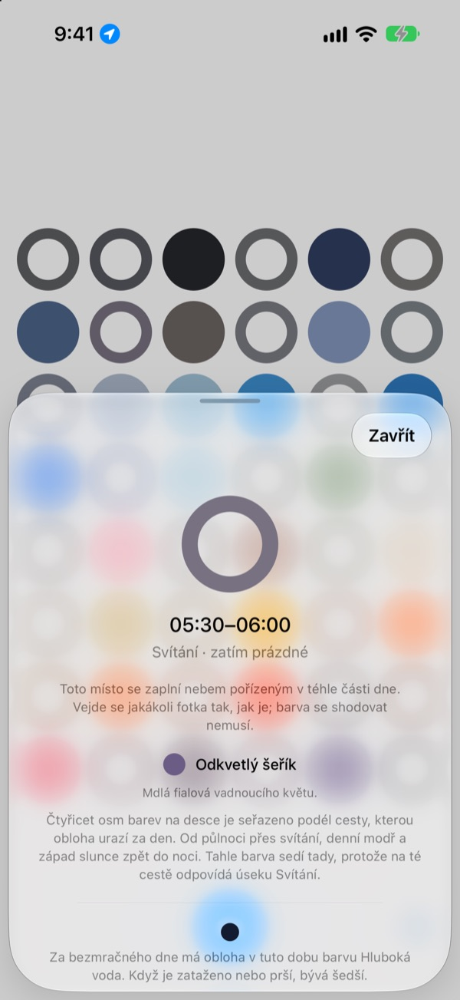
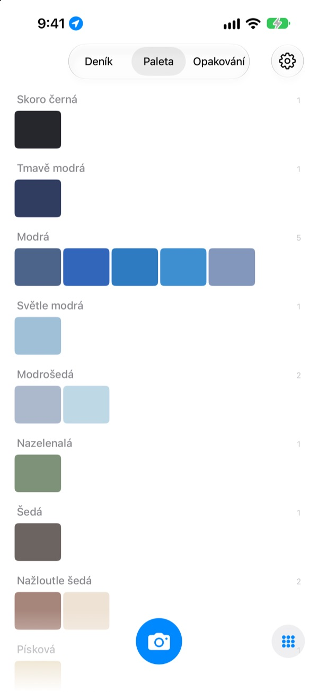

Jakou barvu mělo
dnes nebe?
Vyfoťte nebe a na tabuli o čtyřiceti osmi buňkách se buňka pro tu denní dobu zaplní barvou, kterou jste zachytili. Dostane i jméno, které si snadno představíte: tenký led, bazénové dlaždičky, zralý kaki.
Zdarma. Bez účtu a bez přihlašování.

Vyzkoušejte si tabuli
Klepněte na buňku a uvidíte, ke které části dne patří. Přidejte fotku nebe a zaplní se buňka pro tuto chvíli. Pak posuňte dny dopředu a sledujte, jak se tabule mění.
Na nebe se díváte každý den, ale žádnou barvu si nepamatujete
Nebe cestou do práce, nebe, když jste po obědě vyšli ven: večer už si jeho barvu nevybavíte. A fotky nebe, které jste přece jen pořídili, zapadnou mezi vším ostatním v knihovně. SkyDex je sbírá jako barvy a na jedné tabuli ukáže, kudy dnešní nebe prošlo.
Každé nebe dostane jméno
Každá barva nejdřív dostane jméno, které vám vykreslí obraz, třeba tenký led, bazénové dlaždičky nebo zralý kaki. Pod ním následuje jméno s původem: korejská barva, japonská barva, pigment nebo webová barva.
Když je shoda blízko, stojí u něj Název, když ne, poctivě Nejbližší název.

Zanechte řádek
Hned po vyfocení se otevře karta. Napište, co se vám honilo hlavou při pohledu vzhůru, a pokaždé, když na tabuli klepnete na tu buňku, objeví se to znovu nad nebem.
Přes tuto fotku můžete také položit barvu nebe z jiného dne a výsledek sdílet jako obrázek.

Prázdné buňky ukazují cestu
Klepněte na prázdnou buňku a uvidíte, ke které denní době patří a jakou barvu hledat. Řekne vám i to, jak nebe v tu hodinu vypadá za bezmračného dne, podle východu a západu slunce tam, kde jste.
Barva se trefit nemusí. I šeď zataženého dne je barvou nebe toho dne.

Deník, paleta, opakování
Procházejte svá nebe popořadě a sbírejte barvy do palet, jako je modrá, šedá nebo písková. Vyfoťte stejnou hodinu jiný den a obě nebe se postaví vedle sebe.
Widgety na ploše ukážou dnešní tabuli i dnešní nebe na první pohled.

Začít jde ve třech krocích
- 1
Podívejte se vzhůru
Klepněte na tlačítko fotoaparátu pod tabulí a nechte nebe vyplnit čtverec.
- 2
Buňka se zaplní
Buňka pro tuto chvíli dostane barvu, kterou jste zachytili, a jméno.
- 3
Zanechte řádek
Na kartu, která se otevře, napište, na co jste právě mysleli.
Jak tabule dělí den
- Půlnoc · 0:00–5:00
- šest buněk
- Svítání · 5:00–8:00
- šest buněk
- Den · 8:00–16:00
- dvanáct buněk
- Pozdní odpoledne · 16:00–18:00
- šest buněk
- Západ slunce · 18:00–21:00
- dvanáct buněk, jedna každých 15 minut
- Noc · 21:00–24:00
- šest buněk
Kolem západu slunce, kdy se nebe mění rychle, jsou buňky nahusto, uprostřed noci, kdy se skoro nehýbe, jsou široké. Nahoře je půlnoc a den plyne směrem dolů.
Časté otázky
Jak se buňka zaplní?
Nebe vyfocené dnes zaplní buňku pro čas, kdy jste ho vyfotili, i když barva není taková, jakou jste čekali. Tak nebe v tu hodinu opravdu vypadalo. Nebe z dřívějších dnů se řadí podle barvy: je-li dost blízko barvě některé buňky, zaplní ji, a každé nebe zaplní jen jednu buňku.
Buňka, která byla včera plná, je dnes prázdná.
Tabule je vždycky dnešní. Buňka, kterou včerejší nebe zaplnilo podle času, se s novým dnem znovu porovná už jen podle barvy. Proto je tabule někdy skoro plná a jindy působí prázdně. Vaše fotky nikam nezmizely: všechna nebe jsou v Deníku a seřazená podle barvy v Paletě.
Zaplněné buňky blednou.
To je záměr. Fotka si týden drží svou skutečnou barvu a pak během dalších osmi týdnů pomalu bledne. Nesmaže se a nikdy nevybledne úplně. Vyfoťte nebe v tu dobu znovu a buňka se hned vrátí do plné barvy. Žádná série, kterou byste přerušili, žádné skóre, které byste museli dohánět.
Musí barva sedět?
Ne. Nic se neschvaluje ani nezamítá. Každá fotka se uloží a i šeď zataženého dne je barvou nebe toho dne.
Proč aplikace chce znát polohu?
Jen proto, aby vám po klepnutí na prázdnou buňku řekla, jak v tu hodinu vypadá bezmračné nebe, podle východu a západu slunce tam, kde jste. Používá jen přibližnou polohu s přesností na kilometry a souřadnice se k fotkám nikdy nepřipojují. Když přístup nepovolíte, vše funguje dál a výchozím bodem je Soul.
Můžu přidat nebe z knihovny fotek?
Ano. Nebe vybrané ve Fotkách místo fotoaparátu se také ořízne na čtverec a zaplní buňku pro tuto chvíli, stejně jako to, které právě vyfotíte.
Jak smažu fotku?
Otevřete fotku a klepněte na Smazat, nebo ji v Deníku přejeďte doleva. Zmizí ze zařízení i z iCloudu zároveň. Když smažete aplikaci, kopie v iCloudu zůstane, takže se vám nebe po nové instalaci vrátí.
Co se stane, když vyměním telefon?
Nasbíraná nebe jsou ve vašem vlastním iCloudu, takže pokračují na novém zařízení přihlášeném ke stejnému účtu Apple. Žádný účet ani server, fotky a barvy se vývojáři nikdy neposílají. Žádné reklamy ani sledování.
Je to opravdu zdarma?
Ano, všechny funkce jsou zdarma. Pokud se vám aplikace líbí, můžete vývojáři v aplikaci poslat spropitné, ale nic se tím neodemyká.
Na jakých zařízeních funguje?
Na iPhonu s iOS 17.0 nebo novějším, pouze na výšku.
Chyby, divné chování nebo cokoli, co chcete říct, pište na leeo@kakao.com. Když připíšete, co jste právě dělali a jakou máte verzi iOS, najdu příčinu mnohem snáz.